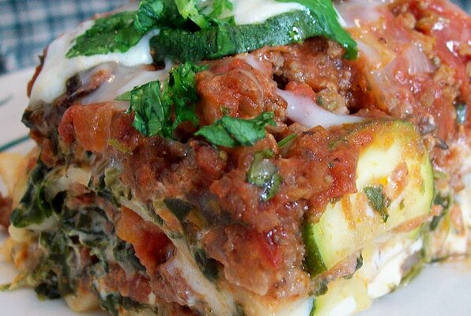

Lori's Spicy Chipotle Lasagna

Description
Don't sacrifice lasagna just because you don't like lasagna. This version packs lots of flavor from Parmesan and Asiago, and is made with few noodles so you low-carb dieters can enjoy it, too!
Ingredients
- 1 pound lean ground beef
- 1 pound bulk hot Italian sausage
- 1 onion, chopped
- ½1 pint sliced fresh mushrooms
- 3 cloves garlic, minced
- 1 chipotle chile in adobo sauce, chopped
- 1 (6 ounce) can tomato paste
- 2 (15 ounce) cans stewed tomatoes
- sea salt and ground black pepper to taste
- ½ cup chopped fresh basils
- ¼ cup chopped fresh oreganoe
- 2 (8 ounce) packages cream cheese, at room temperature
- 1 pound frozen chopped spinach, thawed
- 9 lasagna noodles
- 2 (8 ounce) balls of fresh mozzarella, sliced
- 2 zucchini, thinly sliced lengthwise
- 1 cup grated Asiago cheese
- 1 cup grated Parmesan cheese
- Cook and stir the ground beef and Italian sausage in a large pot or Dutch oven over medium-high heat until lightly browned. Drain any excess grease, then stir in the onion, mushrooms, and garlic. Cook and stir until the onion has softened and turned translucent, about 5 minutes more. Stir in the chipotle chile, tomato paste, and stewed tomatoes. Bring to a simmer, then reduce heat to medium-low, and simmer for 15 minutes. Season to taste with salt and pepper, then stir in the basil and oregano; simmer 5 minutes more then remove from the heat.
- While the sauce is simmering, stir together the cream cheese and chopped spinach until blended. Leave the spinach soggy, the water will help thin out the cream cheese to a sour cream-like consistency.
- Preheat oven to 400 degrees F (200 degrees C).
- Line the bottom of a 9x13 inch baking dish with a sheet of aluminum foil, and lightly grease. Place 3 lasagna noodles on the bottom of the pan, and spread with 1/3 of the spinach mixture. Spread 1/3 of the chipotle meat sauce over this, then layer with 1/3 of the mozzarella and 1/3 of the zucchini. Sprinkle with 1/3 of the Asiago cheese and 1/3 of the Parmesan cheeses. Repeat layers two more times, ending with cheeses on top.
- Cover the dish with aluminum foil, and bake in preheated oven for 40 minutes. Uncover, and continue baking until the top is bubbly and golden brown, 15 to 20 minutes.